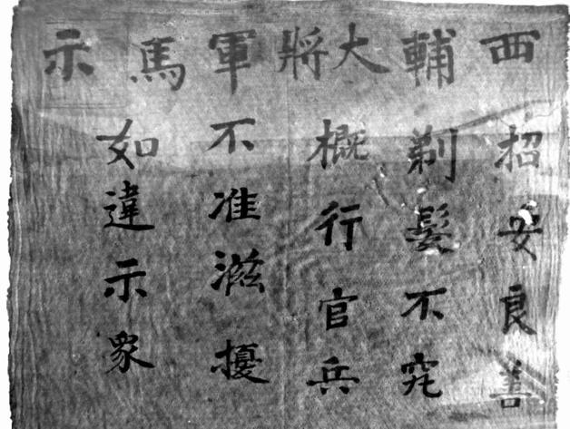
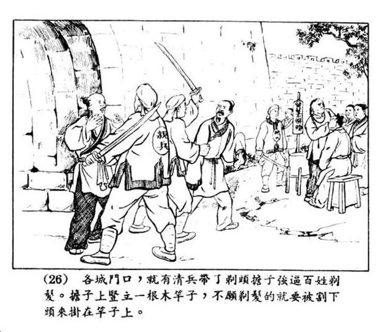

十
日寇南京大屠杀无人不知，而1645年清兵在扬州、嘉定、江阴连续三次大屠杀，知道的人大概已不多。从当时人口比例讲，后者比南京大屠杀有过之无不及。时过境迁，这类记忆却往往被历史冲淡。我们重新提及，如果只为翻翻旧账，没有必要；重要的是，从中收取一些新的发现和认识。
重新认识首先从一点讲起：扬、嘉、江三次屠城，本都可以“避免”。此话怎讲？前面提到皇太极时满清调整政治战略，放弃了屠戮旧俗，公道地说，入关后直至扬州事件前，清兵比明军、李自成纪律都好，更遑论张献忠。扬、嘉、江之屠，直接原因都是遭遇抵抗。
反过来，三地遭屠也为我们做了强烈的标记：到1645年夏天为止，满清入侵的过程，只在东南引发抗战，在别的地方都望风顺从、波澜不兴。这个要点，我们且将它记下。
次而还有两个要点：第一，南京投降后，清兵沿镇江、无锡东进过程中，在很多地方绝无扰民，更不必说屠戮。第二，发生大惨案的江阴、嘉定两地，亦非一开始即呈恶性对抗态势，而是因为当中发生一个重要关节。
且看亲历者计六奇的所见：
初三日甲寅，下午，清兵三百余骑自北而南，穿无锡城中而走，秋毫无犯，观者如市。
初四日乙卯，五更时分，穿无锡城中走，至傍晚止，约万人，马三万余匹，奔放纵横，见者面面相觑，寂无人声。
初七日戊午，下午，清兵到无锡，穿城而过，一夜不息。月夜张买货物，清将杀四人，悬其首于南、北门禁，城中颇称秋毫无犯。水陆俱进，水多于陆。
初八日己未，清兵又过无锡一日，舟中俱有妇人，自扬州掠来者，装饰俱罗绮珠翠，粉白黛绿，亦一奇也。[106]
这几笔记述，均取自计六奇乙酉年五月日记，非同于传闻。两次用了“秋毫无犯”一词。初七所记“清将杀四人”，味其上下文，被杀者应系清兵中个别扰民者。唯一负面场景，是初八来自扬州的清兵载艳妇以过。之后，闰六月、七月间，日记也有两笔关于清兵经过无锡的记叙，皆无劣行，且又一次提到“城中秋毫无犯”[107]。
另外，苏南抗清虽炽，却并不仅此一种情形，也有立即投顺的。如“常州竖顺民旗，至丹徒迎清兵”。[108]“无锡选贡士王玉汝等具肉一百担、面一百担、羊三头以迎清兵。传闻清兵恶门神，城中各家洗去，皆粘‘大清万岁’于门上。”[109]前亦曾提及，太仓城内一律归顺。关于无锡的归顺，计六奇还交代了以下原由。据说刘光斗（前明朝御史、大理寺右丞，已降清）致信王玉汝，告以：“师至而抗者屠，弃城而乏供应者火，公有心人，当为桑梓图万全。”[110]王玉汝接受了这看法，出面与清军沟通。当然，无锡也有不降的一派，他们在顾杲带领下，入太湖打游击。凡已归顺的地方，满清并未加害，这个事实应予承认。
就连反抗最烈的嘉定、江阴两地，起初其实也已归顺清朝。这一点，后来有所留意的人不多，抑或为了突出清兵两次暴行的残酷，而有意掩盖。但实事求是起见，我们在此专门强调：起义之前，嘉定、江阴均已归顺。
请看《江阴城守纪》的记述。六月二十四日，清朝委任的知县方亨到达江阴，当即提出一个问题：
亨曰：各县已献册，江阴何以独无？耆老出，遂谕各图造冊，献于府，转送于南京，已归顺矣。[111]
所谓图册，即包括黄册（户籍）、鱼鳞册（土地登记）、税簿等在内的重要政府档案，其移交，象征政权交替，而江阴由“耆老”为代表，向新政权交出了这些图册，所以说“已归顺矣”。嘉定情况也一样：
（六月）十四日乙丑，北安抚周荃至县，取邑篆（大印）册籍而去。[112]
从手续上说，两地都已接受和承认新朝统治。其次，从时间来看，江阴起义为闰六月初一，嘉定为闰六月十三日，而一个月前清兵即已出现和经过该地，均未受到反抗。不单如此，满清向江阴、嘉定都委派了县令，他们也各自露面、到任（清朝嘉定县令张维熙和江阴方亨一样，六月二十四日到达，因躲避明朝总兵吴志葵抓捕遁去，于闰六月初六复来），到此为止，两县人民均未宣布起义。
事态急转直下，是因一个十分特殊的导火索：薙发令。
薙发令完全是灾难性、摧毁性的，其所造成的轩然大波，怎么形容都不过分。它在东南一带触发的决绝抗争，仅《明季南略》一书之中，即有形形色色、不可胜数的实例。无锡五牧镇，一位养鱼鹰的薛姓老者“以薙发自缢死”。[113]武进诸生许某，为逃避薙发，整整一年“昼则闭户，夜半始出”[114]，顺治三年才被发现。天启进士、无锡人华允诚，誓不薙发，为此“杜门者三年”，直到被告发，清抚土国宝劝其薙发，“不从”，解至南京，遭毒打，“拔公发几尽”，仍不从，称“吾不爱身易中国之冠裳也”，卒见害。[115]无锡泰伯乡诸生邹来甫，创下更久的记录，“不剃发，隐居教授，至康熙初年”。[116]宜兴卢象晋为不薙发，不惜装疯，还是被识破，“捕置狱中”。[117]名臣徐汧闻知薙发令下，“誓不屈辱，曰：‘以此不屈膝、不被发之身，见先帝于地下。’遂自沉于虎邱后溪死。”[118]复社领袖杨廷枢，“清至不剃发。丁亥四月，时隐山中被执，大骂不屈。”[119]然后被杀……

清初薙发告示。
清武职设有“西路副大将军”，品秩从一品。此告示之“西辅大将军”或即此（辅犹副）。从用语看文化水平不高，当系下级军官所书。

连环画《阎应元抗清》，张鹿山绘。
江阴、嘉定起义，纯因满清强制推行薙发令。就两个事件本身而言，我们明确给出结论：没有薙发令，则没有起义。前面说过，薙发令下达前，政权已经移交，民众虽不满，却并未拒绝新统治者——尤其是，并不曾出现将抛却性命以示抗争的苗头。薙发令一下，这才民怨沸腾，而至生不如死、忍无可忍。
我们且借江阴起事经过，还原一下过程：在交出地方图册后，民众普遍认为历史一页就此翻过——
闰六月朔（每月初一称朔），方（亨）行香，诸生耆老等从至文庙。众问曰：“今江阴已顺，想无事矣。”方曰：“止有薙发耳，前所差四兵为押薙发故也。”众曰：“发何可薙耶？”方曰：“此清律，不可违。”
回到衙中，常州府诏文正好送到，当众开读，同时命书吏抄成布告，其中有“留头不留发，留发不留头”一语。这不知是何人得意之笔，大概以为编成这种顺口溜有助于“政策宣传”。可惜效果太强烈，读至此，抄布告的书吏投笔于地，说：“就死也罢！”方亨正欲鞭惩该吏，现场已当即哗变，宣布“反了”。二十多天后，对峙中，清兵从城外射来劝降书，所谈同样着重于薙发，称：“南北两直、山、陕、河南、山东等处俱已薙发，惟尔江阴一处敢抗违国令，何不顾身家性命耶？”又称：“尔等系清朝赤子，钱粮事小，薙发为大。”意谓，答应薙发，朝廷即可免除钱粮，“不动尔一丝一粒”。如此劝降，简直本末倒置，以小人之心度君子之腹。第二天，“江阴通邑公议回书”，人们这样回答：
江阴礼乐之邦，忠义素著。止以变革大故，随时从俗，方谓虽经易代，尚不改衣冠文物之旧。岂意薙发一令，大拂人心，是以城乡老幼誓死不从，坚持不二。[120]
斩钉截铁。“公议回书”的表述非常清楚：江阴人民承认“变革”，不反对“易代”，本已接受清朝统治；一切因薙发而起，此令不除，江阴全体百姓誓死不从。